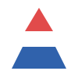
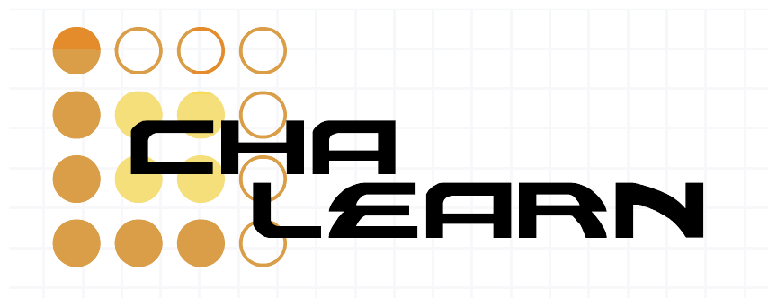
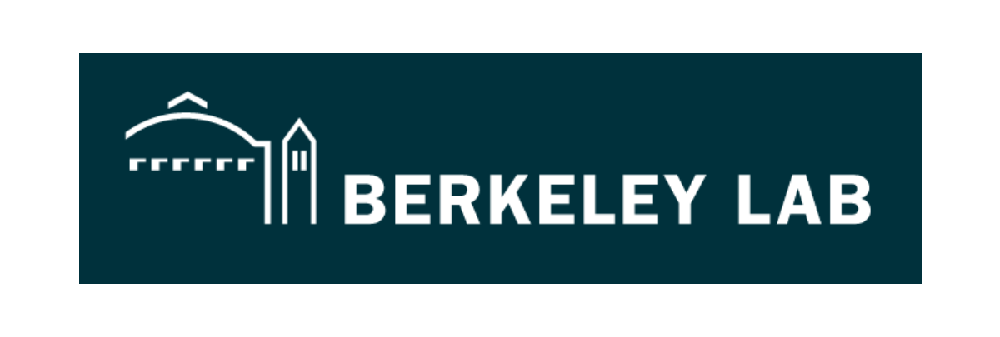

AVALIAAI Competitions & Benchmarks Platform
Next Generation AI Competitions and Benchmarks Platform
Built for organizations that can't compromise on data privacy, scientific rigor, or real-world impact, with full control over your data, submissions, and compute.
A project by

Trusted By
Institutions running high-stakes AI research




The Problem
Today's benchmarking platforms weren't built for high-stakes AI
Methodological fragility
Leaderboards prioritize raw scores over statistical significance. Without confidence intervals or protection against repeated test-set submissions, marginal gains are indistinguishable from noise.
Sensitive data can't leave the building
Most platforms require data to be hosted on a central server, excluding regulated sectors like healthcare, finance, and defense from the benefits of open benchmarking.
Leaderboards ≠ production readiness
Accuracy, F1-score, and RMSE ignore the operational realities of deployment: computational efficiency, latency, and energy consumption.
The Solution
AVALIA: benchmarking as a rigorous, sovereign, production-aware framework
Designed and built in France from the ground up — not layered onto existing tools — AVALIA embeds methodological and architectural rigor directly into its core, aligned with GDPR and European digital sovereignty priorities.
-
01
Rigorous methodology
Principled ranking functions, hidden evaluation sets, and bootstrap uncertainty quantification.
-
02
Sensitive data, handled right
Decentralized storage and compute; data never leaves your infrastructure.
-
03
Real-world applicability
Every submission is profiled for latency, memory, and carbon footprint, not just accuracy.
Architecture
Your data and compute never leave your infrastructure
AVALIA decouples the orchestration layer from execution and storage. Datasets and code stay inside your secured environment; a lightweight public hub coordinates submissions and displays sanitized results.
Model
Submission
(AVALIA)
in / out
Storage & Compute
React-based portal for admins, organizers, and participants (profile, team, competition, submission management).
Python service handling core logic, API coordination, database, user permissions, submission queue, compute connections.
Evaluation tasks run in isolated Docker containers; external compute resources can be attached for heavier workloads.
Only public metadata and sanitized scores live on the host hub; datasets, ground truth, and submission code stay on the client's local storage or S3-compatible buckets.
Level 1
All components hosted on AVALIA's infrastructure (not recommended for sensitive use cases).
Level 2
Front-end and back-end hosted by AVALIA; storage and compute stay on the organizer's infrastructure.
Level 3
All components deployed fully within the client's infrastructure (highest privacy, fully on-premise).
Methodology
Benchmarking as a statistical experiment, not a scoreboard
-
01
Ranking functions
Multiple metrics are aggregated using the average-rank method, or a weighted average rank when organizers want to prioritize specific criteria, instead of ad-hoc score combinations.
-
02
Public and private leaderboards
Public sets support development; hidden private sets verify generalization. Multiple leaderboards per phase, run sequentially or in parallel, with fully configurable visibility — including "private problem, public participation" for sensitive tasks.
-
03
Statistical significance
Bootstrap resampling produces error bars for every submission. Submissions with statistically equivalent performance are grouped together instead of being ranked apart on noise.
-
04
Baseline as a threshold
Organizers define a reference baseline visible on the leaderboard. Submissions must beat it by a statistically significant margin to count as a valid solution, filtering out marginal "leaderboard climbing."
Security & Reproducibility
Full control, zero blind trust
Submission
auto / human-in-the-loop
isolated container
logs, scores, plots
- Git-integrated workflows (GitHub/GitLab) for managing training and evaluation logic.
- Containerized execution for fairness, reproducibility, and long-term sustainability.
- Automated re-evaluation when organizers update a task; outdated results are flagged if re-evaluation is disabled.
- Pre-execution checks — file type/size limits, expected entry points, per-participant quotas and rate limits.
- Optional submission scanning — predefined templates, custom scanner code, or a locally-running LLM — combinable with human-in-the-loop review before execution.
- Network-isolated execution by default, for security and for clean, uninfluenced resource measurements; network access can be explicitly enabled and is flagged when required (e.g. API-based LLM evaluation).
- Decentralized submission storage — files are routed directly to the client's linked storage (AWS S3, GCS, Azure Blob, or local hardware), never stored centrally on AVALIA's infrastructure.
Who It's For
Built for organizations that can't compromise on data
Industrial actors
Organize internal benchmarks across problems like electronic optimization, material handling, and predictive maintenance of equipment and vehicles.
Research institutes
In sensitive domains such as health, education, and energy: install once, then run multiple public or internal benchmarks (imaging, automatic diagnosis, and more).
Defense & public bodies
License with maintenance, with full internal control and no external visibility into internally organized benchmarks.
How to Get AVALIA
Flexible engagement, your infrastructure, your rules
Restricted Licensed Use
Source-available: code is fully readable for transparency and auditing, but usage requires formal permission or a paid agreement. No redistribution without prior authorization. (Exact terms to be defined.)
Consulting Packages
Specialized support for professional installation, technical configuration, and management of individual benchmarks and competitions.
Managed Benchmarking Infrastructure
A dedicated hosted environment for public competitions and benchmarks, with baseline compute support and the flexibility to integrate external compute resources for demanding workloads.
Who's behind AVALIA
Built by the people who built Codabench
AVALIA is developed by MLChallenges, a French consulting company for AI competitions and benchmarks. The team are core developers of Codabench, an open-source competition platform, and have organized large-scale challenges for institutions including Lawrence Berkeley National Laboratory, Université Paris-Saclay, the University of Washington, and the U.S. Department of Energy.
Adrien Pavão
PhD in machine learning from Université Paris-Saclay, specializing in the methodology of scientific competitions. Lead editor and co-author of AI Competitions and Benchmarks — The Science Behind the Contests. Core developer and administrator of CodaLab Competitions and Codabench.
Ihsan Ullah
Research Software Engineer and core contributor to Codabench. Master's degree in Artificial Intelligence from Université Paris-Saclay. Expertise in machine learning and large-scale research software infrastructure, with 3+ years organizing scientific challenges.
We combine leading academic research on benchmark methodology, operational experience organizing dozens of international competitions, and technical mastery of existing platforms like CodaLab and Codabench — giving us a precise view of what's missing for organizations that need to rigorously evaluate AI solutions.
AI 4 Industry Challenge
A €500,000 research grant challenge on multivariate time-series regression for aeronautics data, run on a blind setup where participants trained models without direct access to confidential data.
L2RPN 2023
Participants built AI agents to operate a simulated power grid inside a reinforcement-learning environment.
FAIR Universe
A large-compute-scale AI platform for high-energy physics and cosmology, built with Lawrence Berkeley National Laboratory, Université Paris-Saclay, the University of Washington, the Institute for Advanced Study, and ChaLearn.
Get in Touch
Let's talk
Interested in AVALIA, or have a question for us? We'd love to hear from you.